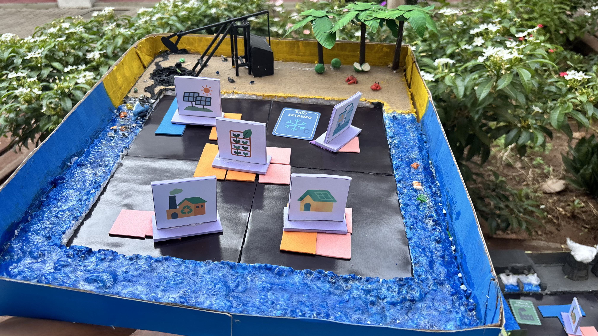
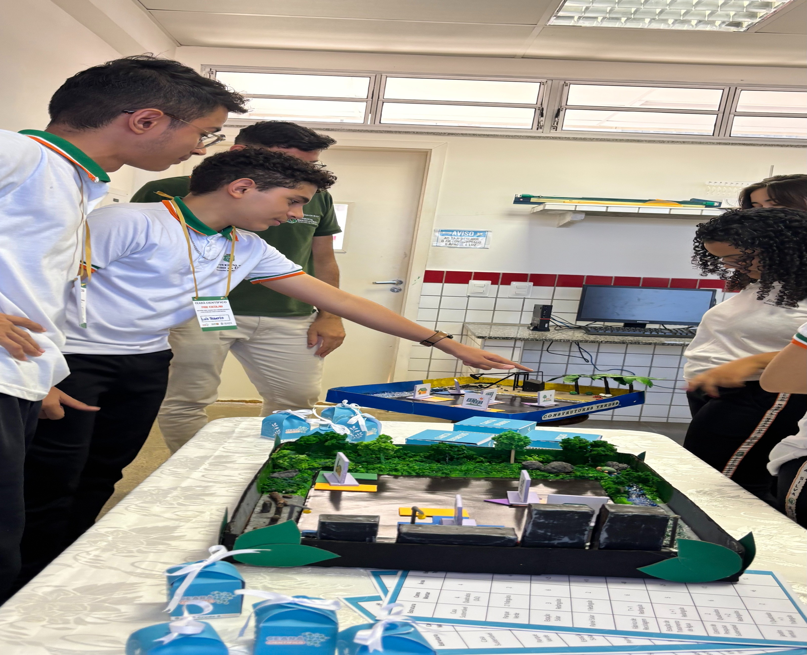

RESUMO
O projeto Construtores Verdes foi desenvolvido pelos alunos do 2º ano do Curso Técnico em Informática da Escola Estadual de Educação Profissional Maria Môsa da Silva, com o propósito de integrar a educação ambiental e a matemática por meio de uma proposta lúdica e interdisciplinar. A partir de pesquisa bibliográfica, estudo da sustentabilidade e elaboração de um jogo pedagógico dividido em três fases — criação, construção e apresentação — buscou-se promover a conscientização acerca do consumo responsável e do combate ao desperdício, ao mesmo tempo em que foram trabalhadas habilidades matemáticas relacionadas às operações básicas, formas geométricas, raciocínio lógico e trabalho em equipe. O projeto contou com o envolvimento ativo dos alunos, o apoio dos professores e o suporte institucional, destacando-se como uma experiência significativa de aprendizagem.


.jpg)
REGISTRO
De modo geral, a análise dos resultados aponta que o projeto contribuiu significativamente para a formação de valores socioambientais, ao mesmo tempo em que fortaleceu competências matemáticas e sociais, como o raciocínio lógico, a cooperação e a autonomia.
Quarta-Feira
04/06/2025
.jpeg)
Hoje demos início ao projeto "Construtores Verdes: Educação para o consumo consiente e a sustentabilidade através da matemática".
Quinta-Feira
11/06/2025

Desde a elaboração das primeiras linhas de código até a implementação de funcionalidades no site, as fotos capturam a energia e o comprometimento dos estudantes em cada etapa do processo.
Terça-Feira
17/06/2025
.jpeg)
Inicio da fase de Construções. Os estudantes foram divididos em grupos e orientados a planejar a estrutura do jogo educativo.
Segunda-Feira
20/06/2025
.jpeg)
Atividade prática de montagem inicial dos jogos. Os grupos começaram a construir os tabuleiros utilizando papelão, isopor, espojas, palito (de churrasco e de dente) e outros materiais reaproveitados.
Sexta-Feira
24/06/2025
.jpeg)
Continuação das construções dos jogos. Os grupos avaçaram na definição dos desafios matematicos, incorporando situações que simulam consumo consiente, economia de recursos e cáuculo de desperdício.
Quinta-Feira
05/08/2025
.jpeg)
Foi realizado uma oficina de ajustes matematicos nos jogos. Os alunos aplicaram operações básicas para calcular pontuações e simular economias de recursos.
Quarta-Feira
01/09/2025

Os grupos finalizaram suas maquetes, realizando ajustes visuas e Estruturais. Foram inseridos elementos simbólicos, como placas educativas, arvores e simulações de práticas sustentáveis.
Quinta-Feira
04/09/2025

Apresentação dos jogos para a comunidade escolar. Cada grupo expôs seu processo de criação, as regras do jogo e os objetivos pedagógicos.
Como jogar
Construtores Verdes
1. Visão Geral
Construtores Verdes é um jogo de tabuleiro em que os jogadores criam terrenos sustentáveis, enfrentam desafios ambientais e ganham pontos ao construir estruturas ecológicas usando peças geométricas.
2. Componentes do Jogo
- Tabuleiro Individual: Cada jogador possui uma grade de 10x10.
- Peças Geométricas: Quadrados, retângulos, triângulos e formas especiais (L e T).
- Cartas de Desafio Ambiental: Apresentam eventos que afetam o jogo em cada rodada.
- Cartas de Bônus: Recompensam boas práticas sustentáveis (reciclagem, energia limpa, eficiência energética).
- Tabela de Pontuação e Energia: Define valores de pontos de vitória e impacto energético de cada estrutura.
3. Objetivo
Construir o terreno mais sustentável, acumulando pontos através de:
- Construções ecológicas completas.
- Cumprimento de desafios ambientais.
- Manutenção de saldo positivo de energia.
- Uso estratégico das Cartas de Bônus.
4. Preparação do Jogo
Cada jogador recebe:
- Um tabuleiro 10x10.
- Um conjunto inicial de peças geométricas.
- Pontuação inicial de 20 pontos de energia.
O baralho de Cartas de Desafio e Bônus é embaralhado e colocado no centro da mesa. Define-se a pontuação máxima ou número de rodadas para encerrar o jogo.
5. Regras de Jogo
5.1 Estrutura de Rodada
- Revele a Carta de Desafio Ambiental.
- Cada jogador pode fazer duas ações no seu turno (colocar peça,
demolir peça, comprar carta bônus, usar carta bônus e/ou passar a
ação).
- Todos posicionam uma peça geométrica no tabuleiro, respeitando
restrições do desafio.
- Jogadores podem usar Cartas de Bônus para obter vantagens.
- Jogadores podem comprar cartas bônus por 5 de energia.
- Jogadores podem demolir peças por 5 de energia.
- Estruturas concluídas geram pontos e afetam o saldo de energia ao
final da rodada.
5.2 Posicionamento de Peças
- Não podem se sobrepor nem ultrapassar os limites do tabuleiro.
- Podem ser posicionadas em qualquer orientação permitida pelo
desafio.
- Estruturas podem ser concluídas em rodadas diferentes.
5.3 Eficiência Energética
Energia Inicial: 20 pontos.
Cada estrutura gera ou consome energia conforme sua função e
tamanho.
Penalidade: Se o saldo de energia for negativo no fim da rodada, o
jogador perde -10 pontos de vitória e perde uma ação.
Carta de Bônus – Eficiência Energética: Reduz pela metade o consumo
das estruturas finalizadas na rodada.
Tabela de Consumo e Geração
| Estrutura | Energia por Unidade |
|---|---|
| Painel Solar | +5 |
| Parque Verde | +3 |
| Centro de Pesquisa | -2 |
| Fábrica de Reciclagem | -8 |
| Estação de Tratamento de Água | -5 |
6. Tabela de Consumo e Geração
| Estrutura | Como Montar | Área | Energia Total | Pontos de Vitória |
|---|---|---|---|---|
| Casa Sustentável | 4 Quadrados (2x2) | 4 | -8 | 10 |
| Parque Verde | 2 Triângulos e 1 Quadrado | 2 | +6 | 15 |
| Estação Solar | 3 Retângulos | 6 | +25 | 20 |
| Painel Solar | 1 Retângulo | 2 | +10 | 8 |
| Fábrica de Reciclagem | T + 1 Retângulo | 6 | -48 | 30 |
| Estação de Tratamento de Água | L + 1 Retângulo | 5 | -25 | 18 |
| Centro de Pesquisa Sustentável | 2 Quadrados + 2 Retângulos | 6 | -12 | 22 |
| Jardim Vertical | 1 Quadrado + 1 Triângulo | 2 | +6 | 12 |
7. Fim do Jogo
O jogo termina quando:
- Tiver 10 rodadas
Vence quem tiver mais pontos de vitória no final.